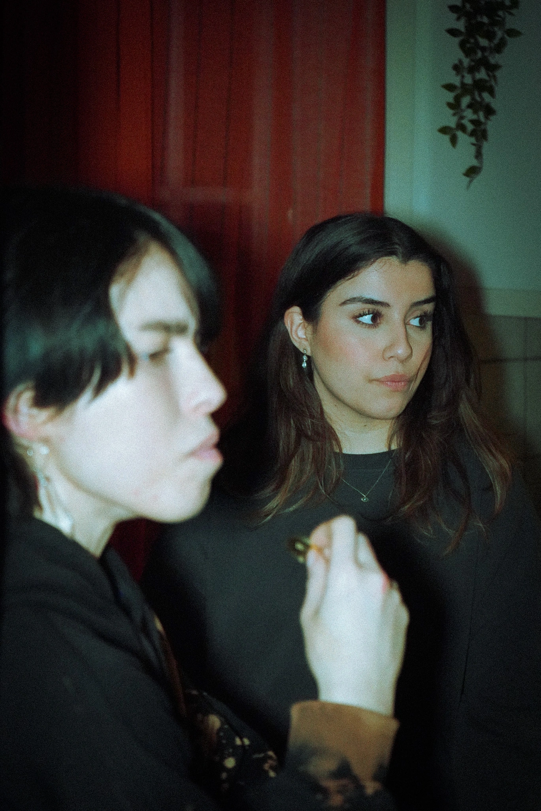
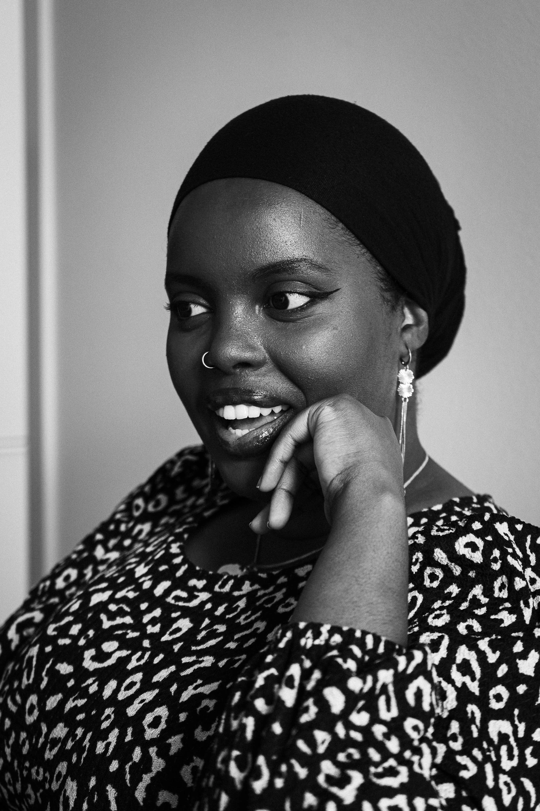
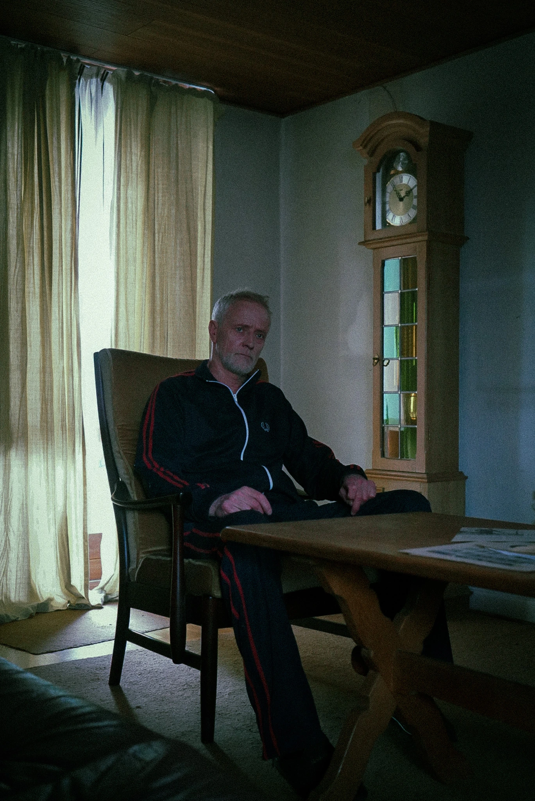
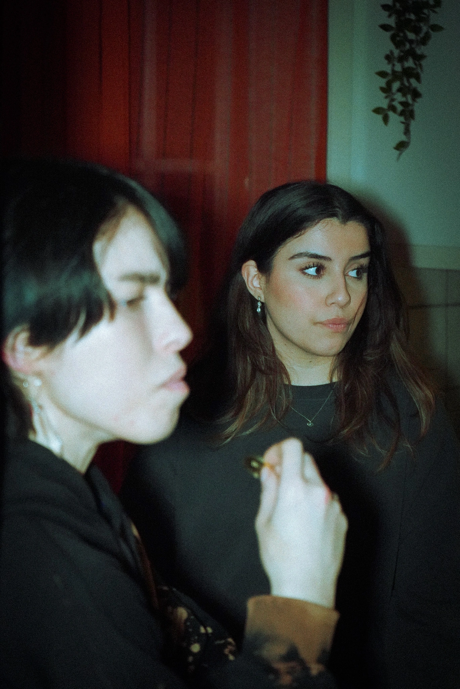
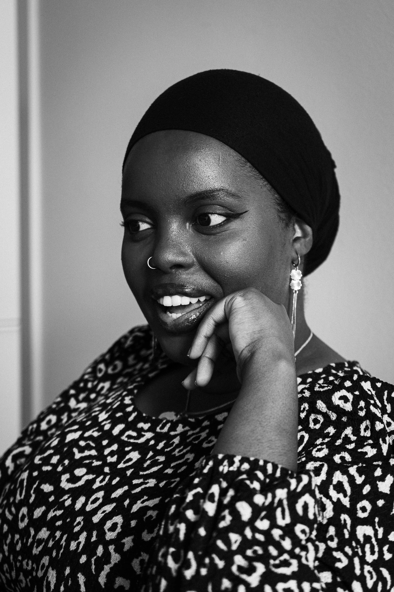
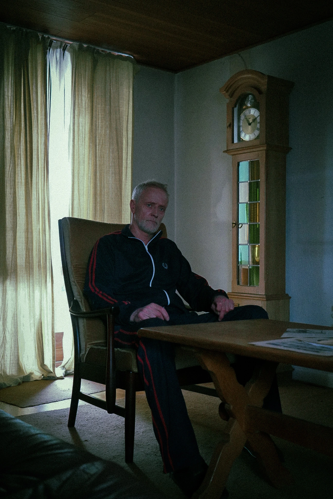

AA ARTISTRY
fotograf & filmskaber
AUTODIDAKT FOTOGRAF
De sidste tre år, har jeg arbejdet med at dygtiggøre mig inden for fotografering, hvilket har givet mig en perlerække af fantastiske og meget forskellige oplevelser heriblandt andet BTS på film, eventfotografering, portætter og produkt- og reklamefotos. Oplevelserne har givet mig evnen til at tilpasse mig mine omgivelser og arbejde på mine fødder, men også strukturer fotokampagner og fotoset og konceptuerer en virksomheds mission til visuelle fortællinger.
HISTORIEFORTÆLLER
Jeg arbejder også med billeder i bevægelse. Fotografering deler min passion med film og video. Mit arbejde har bestået af klipning og fotografering på en mindre skala, men i de seneste år har jeg givet mig i kast med at skrive og formidle historier. Jeg har skrevet manuskripter for andre, men sommeren 2024 blev året, hvor jeg instruerede selv, og havde min manuskript- og instruktørdebut på Odense Internationale Filmfestival.
 





LIGHTS, CAMERA, ACTION
FILMARBEJDEKREATIVITETEN I FORSÆDET
I mit arbejde er der altid plads til utæmmet kreativitet og skørre idéer er altid er velkomne. Så, lad os tænke ud af boksen sammen! Jeg kan love dig, at hvad end du vil fortælle, finder vi en kreativ og krøllet løsning, der viser hvem du og dit brand er.
KONTAKT